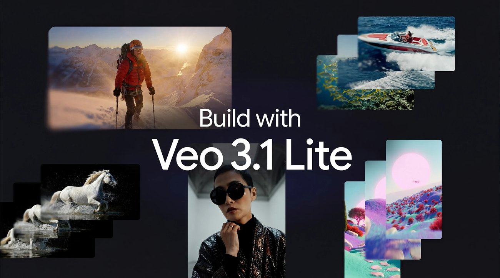
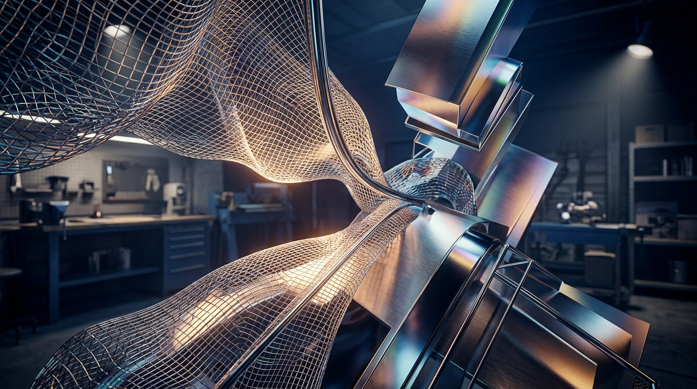
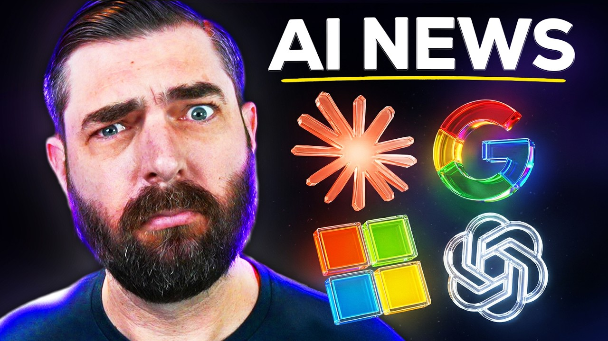
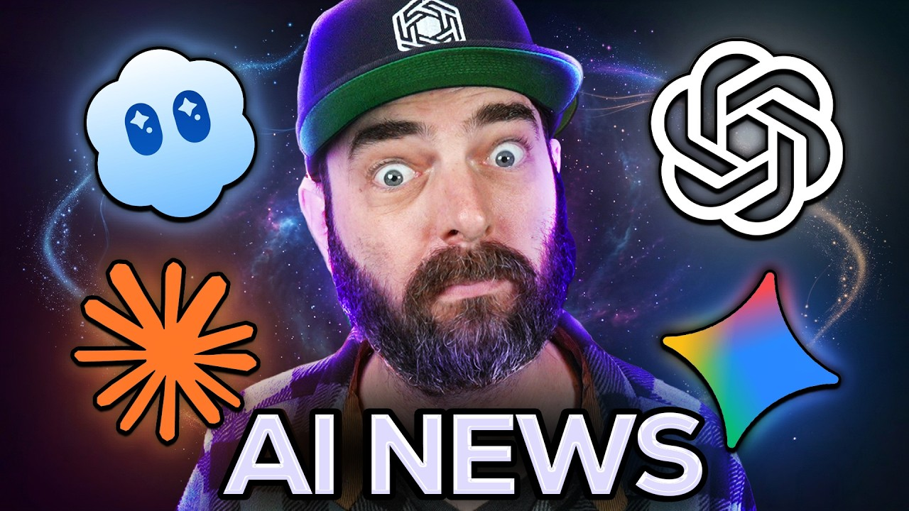

Build with Veo 3.1 Lite, our most cost-effective video generation model
Google이 Gemini API를 통해 새로운 영상 생성 모델인 Veo 3.1 Lite를 개발자들에게 공개했습니다. 이 모델은 기존 Veo 3.1 Fast 대비 50% 미만의 비용으로 동일한 속도를 제공합니다.
가장 비용 효율적인 솔루션으로 소개됩니다.
이번 주 LLM은 성능표보다 운영표가 더 중요해진 주간이었습니다.

Google이 Gemini API를 통해 새로운 영상 생성 모델인 Veo 3.1 Lite를 개발자들에게 공개했습니다. 이 모델은 기존 Veo 3.1 Fast 대비 50% 미만의 비용으로 동일한 속도를 제공합니다.
가장 비용 효율적인 솔루션으로 소개됩니다.

Google가 모델 자체보다 개발 워크플로 쪽에 더 가까운 공식 업데이트를 내놨습니다. 이쪽은 성능 숫자 자랑보다, 개발자가 도구를 어떻게 붙이고 일에 태우느냐가 더 중요해지는 흐름입니다.
엔진 출력표보다, 자주 타는 차에 자동변속기를 달아 놓은 쪽에 더 가깝습니다.
이미지 생성은 화질 과시보다 테스트를 얼마나 많이, 싸게 돌릴 수 있느냐가 더 큰 경쟁 포인트로 보였습니다.
Venturebeat가 이번 주 이미지 생성 흐름을 바꾸는 업데이트를 꺼냈습니다. 이미지판에선 결과물 한 장보다 대기시간, 스타일 일관성, 반복 작업 비용이 먼저 바뀝니다.
한 번 잘 나오는 필터보다, 작업실 조명이 통째로 바뀐 느낌에 가깝습니다.
Adobe Photoshop 27.5 업데이트를 통해 포토샵과 생성형 AI 기반의 무드보드 플랫폼인 Firefly Boards 간에 이미지를 클라우드 문서 형태로 자유롭게 주고받는 기능이 추가되었습니다. 이로써 디자이너들은 생성형 AI로 만든 레퍼런스 이미지를 포토샵 작업에 즉시 활용하며 아이디어 구상부터 최종 결과물까지 훨씬 유기적인 작업 흐름을 경험하게 될 것입니다.
마치 서로 다른 기능을 가진 두 작업실 사이에 편리한 통로가 생긴 것과 같습니다.
영상 생성은 거창한 신기능 발표보다 버전 전환과 기존 작업 자산을 어떻게 이어갈지가 더 크게 보인 주간이었습니다.

OpenAI가 2026년 3월 13일부로 `Sora 1`을 미국에서 내리고, `Sora 2`를 기본 경험으로 돌렸습니다. 기존 버전에서 만든 자산이 있다면 내보내기 가능 기간, 호환성, 새 버전 적응 비용을 바로 체크해야 합니다.
같은 극장 간판 아래 영사기 세대가 통째로 바뀐 셈입니다.
Krea AI Video FX 2026 업데이트를 통해 'Direct Motion Hub' 기능이 새롭게 도입되었습니다. 이제 Krea에서 만든 정지 이미지를 Runway Gen-4.5, Luma Ray 3, Kling 2.6 등 주요 영상 생성 엔진으로 곧바로 전송할 수 있습니다.
이를 통해 애니메이션을 제작할 수 있습니다.
음악 생성 쪽은 이번 주에 유독 방향이 선명했습니다. 프롬프트 한 줄 받아 곡을 뽑는 데서 끝나는 게 아니라, 내 파일과 스타일을 바로 들고 들어오게 만드는 쪽으로 확실히 꺾였습니다.
AI 음악 모델 Suno는 v5.5 업데이트를 통해 이전 버전들이 음질 개선에 집중했던 것과 달리 사용자에게 더 많은 제어 권한을 부여하는 데 초점을 맞췄습니다. 이는 인공지능이 생성한 결과물을 수동으로 다듬는 수준을 넘어, 사용자가 창작 과정에 더욱 깊이 개입하여 원하는 방향으로 음악을 만들어낼 수 있는 새로운 흐름을 의미합니다.
마치 악보대로 연주하던 AI가 이제 사용자의 지휘에 따라 곡의 뉘앙스를 조절하는 오케스트라가 된 셈입니다.
Suno v5.5 업데이트는 사용자가 자신의 목소리로 AI 생성곡을 부를 수 있도록 지원합니다. 또한, 개인 스타일을 학습하여 사용자의 취향에 맞춰 결과물을 자동 조정합니다.
이제 사용자는 AI 음악 감상을 넘어 자신의 목소리와 개성을 담아 직접 창작에 참여할 수 있습니다.
3D 쪽은 멋진 결과물보다 후속 수정과 파이프라인 연결이 더 중요해진 흐름입니다.

National Today 쪽에서 이번 주 흐름을 보여주는 공식 업데이트가 나왔습니다. 3D 쪽 변화는 샘플 한 장보다 모델 정리, 후속 수정, 파이프라인 연결 편의성으로 드러납니다.
멋진 렌더 한 장보다, 모델링 책상 위에 손이 덜 가는 공구를 올린 셈입니다.
WBOC 쪽에서 이번 주 흐름을 보여주는 공식 업데이트가 나왔습니다. 3D 쪽 변화는 샘플 한 장보다 모델 정리, 후속 수정, 파이프라인 연결 편의성으로 드러납니다.
멋진 렌더 한 장보다, 모델링 책상 위에 손이 덜 가는 공구를 올린 셈입니다.
에이전트/자동화는 데모보다 실제로 어디까지 맡길 수 있느냐가 핵심입니다.
Vercel의 `agent-browser`는 AI 에이전트의 브라우저 자동화를 실행합니다. 이제 로컬 브라우저 대신 Browser Use 클라우드 세션에 연결하여 진행됩니다.
똑똑한 비서 한 명보다, 자주 하던 심부름에 전용 동선을 깔아 놓은 느낌입니다.
사내 여러 팀이 워크플로우 자동화를 위해 OpenClaw를 시험적으로 도입하기 시작했습니다. 에이전트 영역은 데모보다 실제 워크플로에 몇 단계까지 맡길 수 있느냐가 승부처입니다.
Ant AI Security Lab이 3일간 진행한 제3자 감사에서 33건의 취약점이 보고되었습니다.
이번 주 이슈랑 같이 보면 맥락 잡기 좋은 영상 3개만 골랐습니다. 뉴스형 브리핑 위주로 넣었습니다.


이번 주 웹진에서 다룬 Gemini 흐름을 같이 훑기 좋은 영상입니다.
